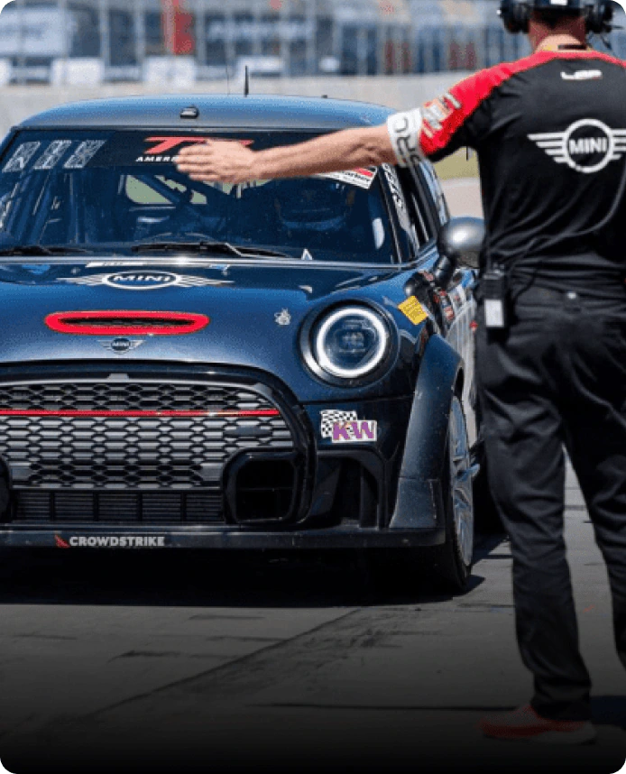

WELCOME IN.
LET'S MINI.

-
MINI COOPER 2 DOOR
There are no wrong turns when choosing between the MINI Cooper 2 Door, MINI Cooper S 2 Door, and high-performance MINI JCW 2 Door.
-

-
MINI COOPER 4 DOOR
Get set up with some of the most beloved MINI Cooper 4 Doors on the market.
-

Heritage
We've been creating cars with the mission of evoking joy and inspiring Big Love for over 60 years.
-
Driving School
Over 50 years of motorsport legacy live in each John Cooper Works MINI.
-

Motorsports
Alec Issigonis built a practical car, a car for everyone. After a few minor tweaks, the MINI Cooper 997 hit the tracks, and the rest was history.